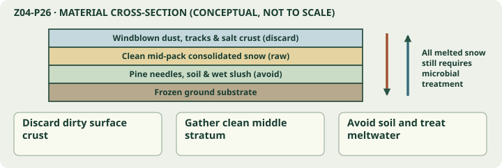

Z04-P26 · Water · Adapted historical material
Screen snowpack layers for windblown dust, tracks and spills
Select cleaner snow strata before melting while keeping raw snow separate from potable drinking water.
When it applies · Winter backcountry or storm isolation where melting snow is the fallback raw-water source.
Equipment · Clean scoop or pot dedicated to raw snow, stove/pot setup and clean finished-water vessel.

Actions
- Avoid snow near roads, parking areas, snowmobile tracks, fuel canisters, camp latrines, animal droppings or discolored windblown dust crusts.[W01, W25]
- Scrape away the surface crust and gather cleaner consolidated snow from beneath the top layer without digging into soil, pine needles or underlying slush.[W25, W08, ED]
- Recognize that even clean white subsurface snow can contain airborne particles and microbes; always treat meltwater before drinking.[W25, W09, W02]
Failure recognition · Scooping snow next to a roadside snowbank contaminated with de-icing salt and petroleum spray, or assuming white snow needs no microbial treatment.[W01, W25, W09]
Verify · Collected snow is free of visible grit, discoloration and fuel odor, and is staged strictly on the raw side for melting and treatment.[W25, W01, ED]
Stop or change course · Reject snow near fuel spills, vehicle exhaust or discolored algal/chemical patches; eating raw snow also chills the core during cold exposure.[W01, W25, E06]
Evidence and editorial notes
- E06 · CDC · Preventing Hypothermia (current web edition)
- Section: Recognizing and treating hypothermia · Conditions: Cold wet exposure; signs such as confusion, slurred speech, fumbling or drowsiness
Support: Suspected hypothermia warrants prompt help and protection from further cooling. It can occur above freezing if wet or chilled.
Limitations: Early mild shivering can mask rapidly worsening judgment impairment. · Conflicting evidence: None; aligns with ARC and WMS guidance.
Editorial note: Anchors exposure-to-medical escalation thresholds. · Specialist reviewer: Wilderness medicine
Primary source · checked 2026-11-24 - W01 · CDC · How to Make Water Safe in an Emergency (2024-09-19)
- Section: Water with fuel or toxic chemicals in it · Conditions: Suspected fuel, toxic chemicals or radioactive contamination
Support: Use a different safe supply. Standard boiling and microbial disinfection do not make this water safe.
Limitations: Does not list contaminant-specific lab remediation; applies to emergency consumer decisions only. · Conflicting evidence: None across CDC/EPA emergency guidance.
Editorial note: Used as upstream hard-stop gate prior to any field treatment card. · Specialist reviewer: Drinking-water safety and public health
Primary source · checked 2026-11-24 - W02 · CDC · How to Make Water Safe in an Emergency (2024-09-19)
- Section: Boil > Steps for boiling water · Conditions: Microbiologically suspect water with acceptable chemical source; portable heat and safe vessel
Support: Clarify cloudy water first. Rolling boil for one minute; above 6,500 feet for three minutes. Cool and cover in sanitized containers.
Limitations: Does not remove dissolved metals, nitrates, fuel, or cyanotoxins. · Conflicting evidence: Older Track B B009 omitted the 6,500 ft threshold; CDC threshold governs.
Editorial note: Require explicit timer verification after rolling boil starts. · Specialist reviewer: Drinking-water safety and public health
Primary source · checked 2026-11-24
Current assessment · W2C-E047 (2026-11-28) · Open: agencies differ; a specialist decision is needed: CDC uses three minutes above 6,500 feet; EPA uses three minutes above 5,000 feet. Cards follow the CDC wording; the more conservative EPA threshold is recorded for decision. Limits: Not changed on cards in W2C-B07. - W08 · CDC · How to Make Water Safe in an Emergency (2024-09-19)
- Section: Boil > Steps for boiling water > cloudy water · Conditions: Cloudy water with no identified chemical hazard
Support: Settling or cloth clarification only prepares water for treatment. Do not count it as disinfection.
Limitations: Removes coarse suspended solids only; dissolved toxins and microbes remain. · Conflicting evidence: Contradicts folklore claims that sand/cloth straining yields potable water; CDC governs.
Editorial note: Always depicted upstream of microbial treatment with an explicit barrier line. · Specialist reviewer: Drinking-water safety
Primary source · checked 2026-11-24 - W09 · CDC · Water Treatment Options When Hiking, Camping, or Traveling (current web edition)
- Section: Overview and water treatment methods · Conditions: Hiking or camping where no safe source is confirmed
Support: Even clear water can contain germs. Assess the supply and carry safe water or an appropriate treatment method.
Limitations: Visual clarity never detects microbes or dissolved chemical contaminants. · Conflicting evidence: None across CDC/NPS/EPA sources.
Editorial note: Reinforces clarity-is-not-potability invariant across all Z04 cards. · Specialist reviewer: Drinking-water safety and public health
Primary source · checked 2026-11-24 - W25 · USGS · Snowmelt Runoff and the Water Cycle (current web edition)
- Section: Snowmelt Runoff and the Water Cycle · runoff · Conditions: Late-winter and spring snowpack runoff and melting snow
Support: Melting snow can contribute to runoff and streamflow. The observed result varies with watershed, weather and upstream conditions.
Limitations: This source does not establish a safe crossing hour, a contamination level or a universal meltwater hydrograph. · Conflicting evidence: None; reinforces snow source screening and seasonal runoff shifts.
Editorial note: Supports seasonal snow/ice water cards and meltwater screening. · Specialist reviewer: Hydrology and cold-weather operations
Primary source · checked 2026-11-24
Current assessment · A04-W25 (2026-11-25) · Bounded support confirmed (A04): Snowmelt contributes to flow with local variation; cannot forecast a crossing from weather alone. Limits: Specialist review PENDING (Hydrology and cold-weather operations); publication HOLD. All release decisions pending.
Source lineage · B012 P22 and USGS snowmelt cycle; new manuscript · Classification · Adapted historical material.